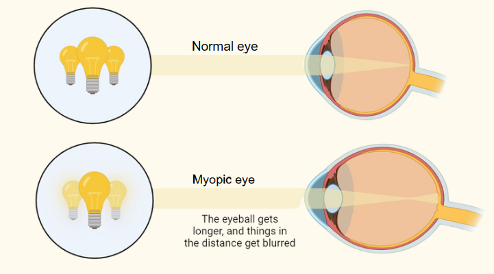
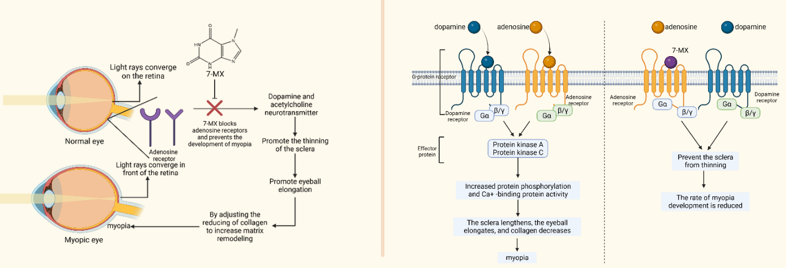
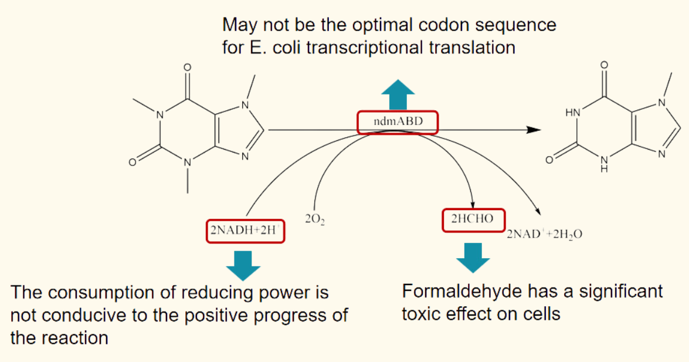
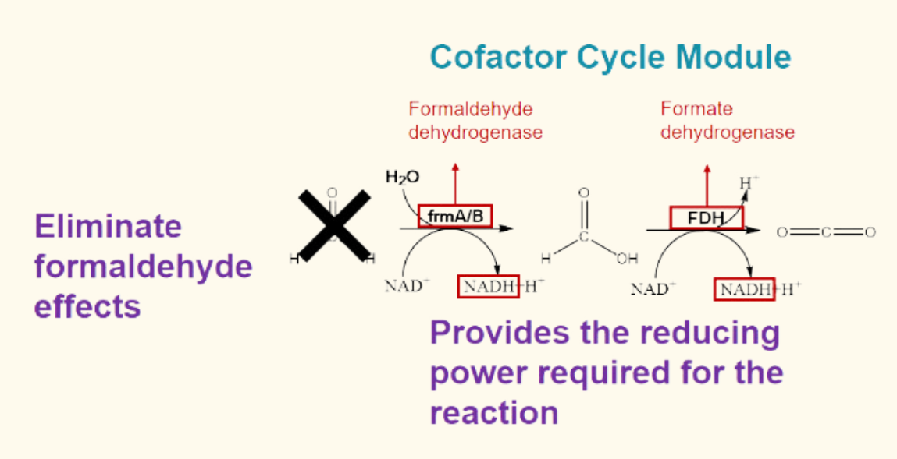

Inspiration
Our team members possess diverse perspectives and viewpoints in synthetic biology. Nevertheless, it is our ultimate consensus that we fervently aspire to draw inspiration from our quotidian experiences in order to formulate a project that can effectively improve the overall standard of life. Frequent gatherings are held to engage in collaborative ideation sessions aiming at devising strategies to address practical challenges through the application of synthetic biology. With careful examination, we realized that a large portion of our team members are currently afflicted with myopia. Subsequently, by means of systematic observation, conducting interviews, and consulting relevant reports, we concluded that the prevalence of myopia was experiencing a notable surge within the general population. In our analysis of café statistics, a significant proportion of consumers exhibited varying degrees of myopia. In order to elucidate this occurrence, it is postulated that certain individuals consume coffee as a means to enhance their cognitive focus and sustain wakefulness to work on tasks requiring heightened attention, such as manuscript writing and computing programming, which can promote formation of myopia. Nevertheless, the current myopia treatment have numerous limitations. Therefore, our objective is to develop a secure and dependable strategy with the potential for long-term utilization, to fundamentally alleviate the development of myopia.
Background
Myopia
Myopia is recognized as one of the three prominent global disorders. Currently, the global prevalence of myopia is at approximately 30%.1 The prevalence of myopia in China is estimated to be over 400 million individuals, with teens accounting for about 270 million of this population.2 In 2015, the global economic cost resulted from unaddressed myopia and vision impairment caused by myopic macular degeneration was estimated to be a staggering $244 billion.3 According to the forecast, the global population of individuals afflicted with myopia will escalate to five billion in 2050 year, leading to an exacerbation of health-related complications and a consequential amplification of economic burdens.4
Myopia is caused by elongation of the axis-oculi and reduction in lens’ focal length, resulting in an elongated or egg-shaped eyeball. The progression of myopia has the potential to result in several ocular complications, including cataract, glaucoma and irreversible visual impairment.5

7-methylxanthine
7-methylxanthine (7-MX), a natural metabolite of caffeine, is a novel and ideal drug suitable for long-term oral administration by people of all ages to alleviate myopia development. It is a non-selective adenosine antagonist that causes scleral thickening and increases the diameter of the scleral collagen fibers. These effects are in contrast to the reported changes in myopic eyes. Moreover, 7-MX exhibits negligible toxicity, absence of allergenic effects, blood-brain permeability, and decent efficacy. When taken orally, it can satisfy nearly all optimal drug criteria for the treatment of progressive myopia.6,7

Coffee residues
The expansion of the worldwide coffee market has resulted in a steady rise in the production of coffee residues. According to the International Coffee Organization, the global annual production of coffee residues exceeds 6 million tons.8 They are expected to be used as forage, but the residual caffeine leads to diminished feed intake of cattle, decreased protein digestibility, and reduced nitrogen retention.9
Current Methods
Myopia treatments
Currently, we still lack effective approaches for the prevention and treatment of myopia. The existing remedies like glasses can improve visual acuity by rectifying refractive errors, but they cannot address the underlying pathological mechanisms, which cause continual elongation of the axis-oculi and progression of myopia. Similarly, the existing myopic surgery and eye drops have the potential of heightening visual impairment and, to some extent, increasing the risk of myopia relapse.10 These traditional approaches for myopia adjustment, like glasses and contact lenses, cannot provide secure and effective alleviation over the long term.
Production of 7-methylxanthine (7-MX)
Although 7-MX has been demonstrated to have the potential of mitigating myopia development while causing minimal side effects, its manufacturing still faces certain obstacles. The existing de novo biosynthesis pathway of 7-MX exhibits limited productivity and entails significant costs. Furthermore, during the demethylation process involved in 7-MX manufacture from caffeine, formaldehyde is generated as a byproduct, which poses a dual threat as a detrimental chemical to bacterial chassis and a pollutant the environment.11

Disposal of coffee residues
Nowadays, coffee residues typically end up being transported to landfills for disposal. Subsequently, their disposal has the potential to emit methane, a greenhouse gas with a potency of 25 times greater than carbon dioxide in damaging the environment.12
Solution
To effectively prevent the generation and progression of myopia, we designed a treatment named "Opticafé", utilizing 7-MX derived from economical coffee residues.
Compared to the traditional de novo biosynthesis route, Opticafé constructs a cofactor regeneration system in engineered cells. With this ingenious system, it becomes possible to not only address the deficiency of NADH, but also eliminate the pollution of the byproduct formaldehyde.
By concurrently adjusting gene expression, we are able to effectively enhance both the yield and purity of 7-MX. This approach overcomes the constraints associated with low yields and purity of the manufacture of 7-MX in yeast from scratch. The safe alleviation of myopia across all age groups can be potentially achieved by incorporating the synthetic 7-MX into coffee products or pharmaceutical formulations. This approach mitigates the possible hazards associated with the development of severe myopia. Moreover, the coffee residues obtained from the extraction process can be effectively repurposed as livestock feed, maximizing the utilization of the residual nutrients and mitigating any potential adverse environmental consequences associated with these residues.

Achievement
Opticafé provides a solution for people who are suffering from myopia and eye diseases caused by axis-oculi elongation. This approach presents a novel method to mitigate myopia, while simultaneously optimize 7-MX production and promote environmental sustainability through material recycling. The multiple reuses of coffee grounds, which are caffeine-rich waste, solve the problem of limited production of 7-MX biosynthesis from scratch. 7-MX transformed from caffeine can alleviate the emergence and development of myopia. The incorporation of a cofactor regeneration system serves to eliminate the detrimental effects of the byproduct formaldehyde on environment, the human body and E. coli host. This approach can efficiently circumvent the potential environmental pollution caused by coffee grounds. Furthermore, the utilization of processed coffee grounds as livestock feed offers the opportunity to optimize the nutritional value of cattle.